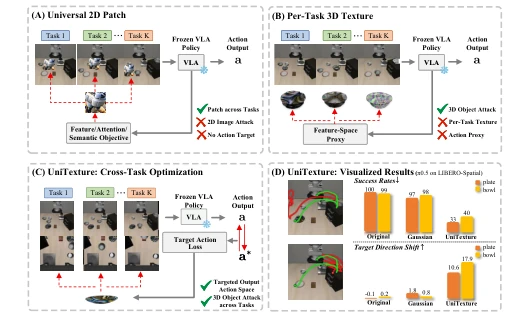
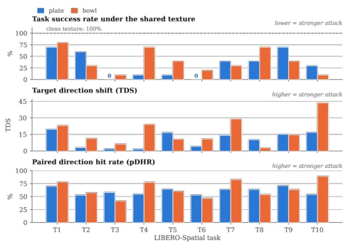

Vision-Language-Action (VLA) 模型正试图成为通才机器人策略，但这也意味着攻击面被无限扩大。现有的对抗攻击研究大多存在明显短板：要么是针对单一任务或指令优化的，无法应对多任务场景下的跨任务漏洞；要么是通用的 2D 补丁，缺乏对 3D 物体表面的几何约束，导致在真实物理交互中失效；要么是像 Tex3D 这样的 3D 纹理攻击，虽然绑定了物体，但需要为每个任务单独优化纹理，缺乏通用性。例如，Wang et al. (2024) 和 Lu et al. (2026a) 的工作主要关注图像空间或 2D 补丁的通用性，忽略了物体几何约束；而 Chen et al. (2026) 的 Tex3D 虽然实现了 3D 纹理攻击，但依赖特征空间代理且需任务特定优化。本文旨在填补这一空白：是否存在一种单一的、绑定在物体表面的纹理，能在不针对每个任务重新优化的情况下，系统性地诱导多任务 VLA 模型产生定向的动作偏差？这不仅是理论问题，更关乎机器人部署的安全性。
—

Figure 1: Overview and comparison of UniTexture. (A) Uni- versal 2D patches transfer across tasks but lack 3D surface constraints and explicit action targets. (B) Existing 3D texture attacks are object-bound but require task-specific textures and feature-space proxies. (C) UniTexture optimizes one shared object-bound texture across tasks using targets in the VLA’s native action space. (D) On π0.5 in LIBERO-Spatial, UniTex- ture reduces task success and induces larger target-direction action shifts than the original and Gaussian baselines.
Figure 2: Overview of UniTexture. (1) A task suite induces a cross-task distribution: rather than fitting a separate texture per task, UniTexture optimizes one shared texture θ for all tasks. Before joint optimization, an offline calibration stage fits per-view lighting ψL v and per-object material ψm o so that the rendered clean object matches the simulator’s appearance; the resulting ψ⋆is then frozen. (2) During joint optimization, each sampled frame supplies its rendering condition (Ci, Pi, Mi); the shared texture is rendered on the fixed mesh, composited into the agent view (OpenVLA and π0.5) and the wrist view (π0.5), and passed with the instruction L to the frozen VLA policy. A targeted action loss compares the predicted action a with the attacker-specified target a⋆and backpropagate
Figure 3: Representative failed π0.5 rollout under a UniTexture attack on the plate in LIBERO-Spatial. The leftmost agent view shows projected gripper-center trajectories for the clean rollout (green; TDA = −12.4, DHR = 12.5%) and attacked rollout (red; TDS = 18.3, pDHR = 58.6%), interpolated from centers tracked every 20 frames. The remaining panels show the attacked rollout in temporal order, with agent views above wrist views.

Figure 4: Per-task results of the two object-specific UniTex- ture attacks against π0.5 on LIBERO-Spatial. The plate and bowl textures yield aggregate SRs of 33% and 40%, respec- tively, in Table 1. Each texture is jointly optimized across all ten tasks and deployed unchanged, with 10 rollouts per task. T1–T10 follow the suite’s standard task order; the pan- els show SR, TDS, and pDHR from top to bottom, and the dashed line marks the 100% clean-reference SR. Both tex- tures produce positive TDS on every task, while the resulting reduction in SR varies across tasks.